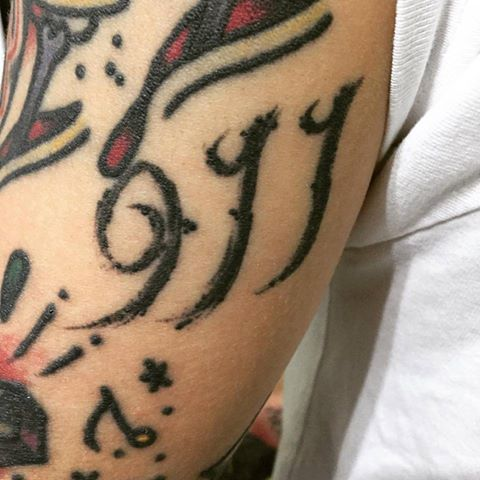
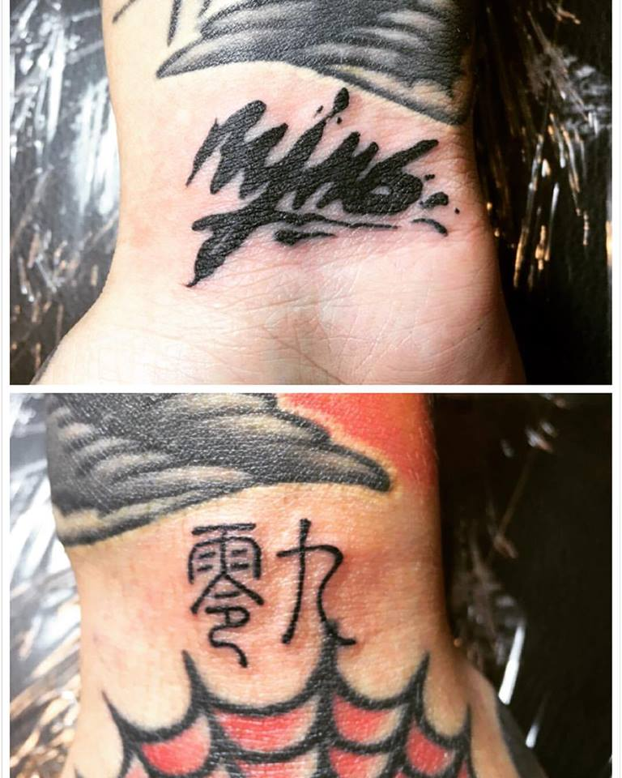
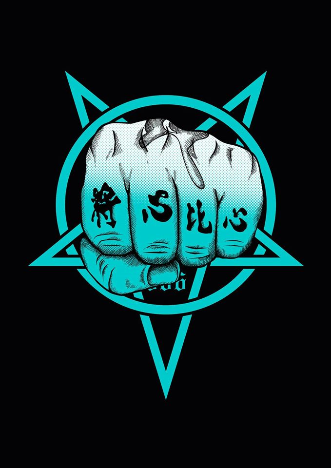

First Section
謝 和 弦
  
在生病 出事時 幫我說話的朋友 還有警惕自己要將心比心 全部都刺在身上!!!!!!
謝和弦
英文名
R-chord
出生
1987年4月15日(29歲)
國籍
中華民國
職業
創作歌手
教育程度
臺北市私立南華高級中學職業進修學校 畢業
配偶
戴怡軒
代表作品
<關於> <於是長大了以後> <寂寞瘋了> <牽辛萬苦> <擁抱失敗> <愛不需要裝乖>
唱片公司
亞神音樂(2009-2012) 華納音樂(2014-)
爭議事件
2012年8月3日，謝和弦在個人Facebook上表示自己吸食大麻，隨後到案亦自認吸毒，藥檢結果亦呈陽性反應，地檢署傳喚其出庭應訊。所屬的亞神音樂已表示待官司告一段落後會與其解約。期間，謝和弦父親謝志孟在專訪時表示，曾將被診斷出有躁鬱症的謝和弦送至南投草屯公立療養院接受治療。
2012年9月28日，謝和弦在個人Facebook貼出公開道歉文，表示已得到應得的警惕和教訓，並為此不良示範致歉，此外，並未向其他被罵的藝人道歉
2012年10月6日，因謝和弦在暴走事件後仍不斷在臉書上發表不適當言論，其唱片公司亞神音樂要求解約，謝和弦便在臉書上發表「我會死給你們看」等言論
2012年10月8日，謝和弦在臉書暗指演藝圈大哥以「出外景」為由拐騙女孩，以「胡姓大哥」與「吳姓大哥」讓外界自己去聯想。對此，吳宗憲在華視「POWER星期天」回嗆：「要有Guts（膽量），請拿出證據、指名道姓，別藉網路標新立異、搏名氣，很不實在」
2012年11月4日，謝和弦在臉書上放話，說演藝圈的胡姓跟吳姓大哥，用權威拐騙那些有夢想的女孩，之後甚至點名吳姓大哥就是吳宗憲，讓吳宗憲氣的說已經在蒐集資料，考慮對謝和弦提告
參考資料
Go To First Section